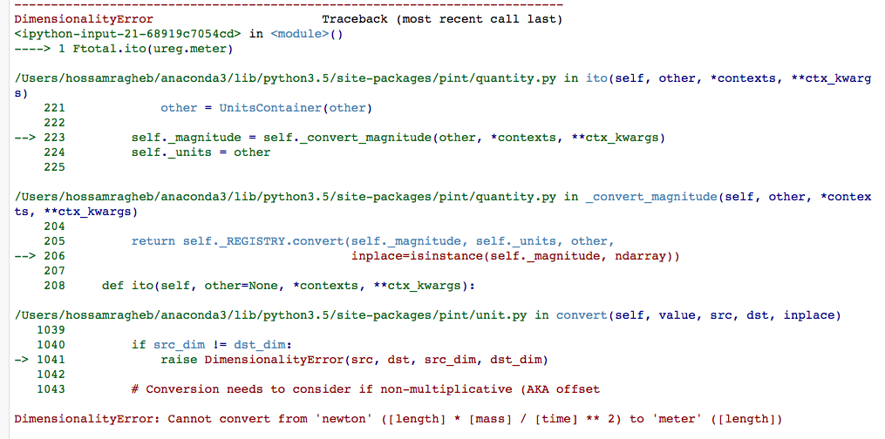

How to use the Virtual Machine?
To download the virtual machine please click here
The virtual machine has a light lubuntu distribution installed, the user name and password are 'feeg6003'.
Once you are logged in press ctrl + alt + t which will open a new terminal, we modified the terminal to start a jupyter notebook right away for users who are not familiar with linux environment. If you want at any point to use the command line press ctrl + c to get back to the normal temrinal.
After allowing the Jupyter notebook to load, please click on the desktop folder, where you will find two notebooks:
1- LiveCoding.ipynb:
This notebook contains the live coding commands used in presentation for your reference. Feel free to use these commands in the excercise.
2- computing_with_units_exercises.ipynb:
This notebook contains four exercises which cover Pint basic commands and Buckingham theorem.
Why to compute with units?
International collaboration in research is essential, however In reality countries uses different standards and units such as metric, empirical,..etc. The interface between international companies is a critical part of the project, which needs to be handled with extra care otherwise international collaboration would be a source of risk to the project, finances and even lives.
Mars Climate Orbiter disaster in 1999 is a well known example of interface failure. NASA / Lockheed lost the mars climate orbiter because part of the project staff used United States customary units and the other metric units. 125 million dollars was lost and the reason was that computer codes didn't account for different UNITS interface.
Physical quantities in computational environment
A physical quantity is essentially a set composed by magnitude and units, such a quantity posses dimensionality as well ex. Force = 24.0[mass*length ⁄ time2].
various packages are available to define, operate and convert physical quantities such as Pint, Physics, Units, numerical units.
How Pint works?
Python uses Container model approach (employed by Pint and other libraries):
class Quantity(object):
def __ init __(self,magnitdue, unit):
Packages such as numerical units uses different approaches, however we are not going to discuss these packages further.
Pint creates a Quantity object for each physical quantity defined by two main arguments: Magnitude, Unit.
Basic Pint Commands
1. Import Pint
from pint import UnitRegistry
2. initialise Pint by creating instance of UnitRegistry
now you are ready to start using Pint.
3. Example: Cube material density
We will calculate the density of a cube, first define the side of the cube in meters, this is done by multiplying the magnitude by the ureg.meter.
Now Pint defined a 'Quantity' object with the name 'L' and assigned a magnitude and unit of 1.0 and meter respectively.
We can easily check that this is the case by printing the variable:
Define the cube volume, lets assume that the cube material is steel.
Cubing the Length 'L' also affects it's unit, we expect the V_st to have a unit of cubic meter.
In[3]:print(V_St)
1.0 meter**3
As expected the units reflected the operation done on the variable 'L'.
Now we take this further and define a new variable M_st for the mass of the steel cube then we calculate the density 'ro_st' of the steel cube by dividing the mass 'M_st' by the volume 'V_st':
In[4]:M_st = 7785 * ureg.kilogram
ro_st = M_st/V_st
print(ro_st)
7785.0 kilogram / meter ** 3
The density has the correct units as we expected.
Pint allows operations on different unit systems in the same equation. internal conversion takes place and set the default system to the first variable in the equation. we will investiage this further and evolve the previous example to demonstrate this concept.
Stack of Cubes:
Two cubes stacked on top of each other the first is made of steel with density of 7785 kg/m3 and the second is made of aluminium with density of 22.53 lb/gal. both cubes size are 1.0 m3, calculate the force under the cubes due to gravity.
In[5]: g = 9.81 * (ureg.meter/ureg.second**2)
ro_al = 22.53 * (ureg.lb/ureg.gallon)
V_st = 1 * ureg.meter**3
V_al = V_st.copy()
M_st = ro_st * V_st
M_al = ro_al * V_al
We mixed units in our calculations and we are going to demonstrate that Pint handle mixed units very well.
In[6]: M_al
22.53 meter3 pound/gallon
We multiplied a volume of 1 m3 with a density pound/gallon. it's clear that Pint keeps track of this fact.
Calculate the total force due to the two stacked cubes as follows:
In[7]: Ftotal = (M_St+M_al) * g
Ftotal
102854.80308708138 kilogram meter/second2
It's now clear that Pint does the internal conversion and produce the correct units even if we have mixed units in the equation.
3.1 Concept of Physical Quantity
We have discussed earlier the concept of physical quantity, Pint can store three methods for each Quantity object, magnitude, units and dimensionality and we can call them simply as follows:
In[8]: print(L.magnitude)
print(L.units)
print(L.dimensionality)
1.0
meter
[length]
3.2 Conversion
If we don't want to convert the unit permenantely we can use method '.to' however for permenant conversion we use '.ito' instead.
In[9]: Ftotal.to(ureg.newton)
102854.80308708138 newton
Pint has 'newton' units which is exactly the same as kilogram meter/second2, but we will use it here to show the concept of conversion in general. it's clear that the conversion done successfuly but this is not permenant and we can prove this by printing the 'Ftotal' variable.
In[10]: print(Ftotal)
102854.80308708138 kilogram meter/second2
It's unchanged as expected, however if we want to permenantely convert the unit we use:
In[11]: Ftotal.ito(ureg.newton)
102854.80308708138 newton
In[12]: print(Ftotal)
102854.80308708138 newton
The variable 'Ftotal' is permenantely converted.
Pint also identifies invalid conversions and produce dimensionality error message, so if we try to convert the 'Ftotal' to meter we should expect and error to handle this invalid conversion:
In[13]: Ftotal.ito(ureg.meter)
Pint produces the following error.

Pint base units is metric system and can be called as follows:
In[14]: print(Ftotal.to_base_units())
102854803.08708139 gram * meter / second ** 2
In[15]: Ftotal.ito_base_units()
print(Ftotal)
102854803.08708139 gram * meter / second ** 2
4. String parsing
So far we assigned units to quantities by using object constructor but What if we have a .txt or .csv file with data and want to import these data with it's units?
Assume we have a text file with magnitudes and units of some physical qunatities, and somehowe we managed to import these to python. we can assign these units to the magnitudes and use them in the program.
In[16]: Mag = 3.0
Unit = 'inch'
Three ways of defining the units using the data imported:
- Using Parse expression:
In[17]: Mag * ureg.parse_expression(Unit)
3.0 inch
- Calling Registry (shortform):
In[18]: Mag * ureg(Unit)
3.0 inch
- Using Quantity constructor:
In[19]:Q = ureg.Quantity
Q(Mag,Unit)
3.0 inch
Remember that this is how Pint stores the physical qunatities, as can we see below Pint build the units using Quantity constructor. If we call the representation of the 'Ftotal' variable it will show us that it's stored as Quantity:
In[20]: repr(Ftotal)
"<Quantity(102854803.08708139, 'gram * meter / second ** 2')>"
Websites such as google is using similar method to convert units if typed in the search bar. assume that we built a searchh engine and imported the text typed in the search bar we can return the converted units using a very simple 2 lines code which is fast to execute.
In[21]:Typedtext = '3.0 * meter to inch'
conv, to = Typedtext.split('to')
Q(conv).to(to)
118.11023622047242 inch
6. Advanced Skills
- Define based on other Units
Create a file .txt
add your units interm of other units:
example:
hour = 60 * minute = h = hr
the form of the definition is:
[Canonical name] = [Definition] = [Aliases]
- Define a Reference Unit
If the unit is a reference unit, we like to define it's parameters:
second = [time] = s = sec
the form of this definition is :
[Canonical name] = [Dimensionality] = [Aliases]
The Reference Units or defining units interms of other units can be done in two ways:
- txt file:
Create a file lets say has a name 'mydef.txt' in the same folder of your code and add the previous definitions in the file.it can be imported and used in Pint as follows:
In[24]: ureg2 = UnitRegistry('mydef.txt')
And we can check the dimensionality of the defined unit 'second' which we assigned [time] to it as it's dimension.
In[25]: ureg2.second.dimensionality
`<UnitsContainer({'[time]': 1.0})>`
- Programmatically
In[26]: from **Pint** import UnitRegistry
ureg = UnitRegistry()
Q2 = ureg.Quantity
ureg.define('ACM_time = 90 * minute = ACMtime')
your_Age = Q2(30, 'year')
print(your_Age.to('ACMtime'))
175316.25541500002 ACM_time
Here we defined a new time unit ACM_time which is defined as 90 minutes and we gave it an alias ACMtime. we can see that the conversion was done as we expected.
7. Unit Registry
One needs to be careful when using Pint with multiple modules. a unique registry needs to be created and it's not allowed to operate between multiple registries at the same time. this concept is demonstrated here:
In[27]: q1 = UnitRegistry().meter
q2 = UnitRegistry().meter
id(q1._REGISTRY) is id(q2._REGISTRY)
False
Avoid creating multiple instances of UnitRegistry if you plan to use Pint in multiple packages.in such a case the following steps needs to be done:
- add the following to __ init __.py
from pint import UnitRegistry
ureg = UnitRegistry()
Q_ = ureg.Quantity
- then in your module add the Pint UnitRegistry as following:
- and then construct the qunatities as following:
side = Quantity(1, 'meter')
Bukingham π theorem
The Buckingham π theorem states that if you are dealing with an equation associated to a physical system involving:
- n numbers of physical variables (as Velocity, Acceleration, Force, ...)
- k numbers of independent fundamental quantities (as [time], [length], ...)
Then you can express the equation in terms of:
p = n − k
First, import pi_theorem from Pint.
Consider a system like a pipe in which is flowing water, this system is characterzied by:
- p (pressure), L (length), D (length), ρ (density), μ (viscosity) and v (velocity) as physical quantities. Then n = 6.
- [time], [mass], [length] as independent fundamental quantities (all qunatities could be expressed as one or more of these quantities). Then k = 3.
So, as p = 6 − 3 = 3 we can express our equation with one dimensionless number Π.
p dimensionless numbers.
In[28]: Pi = ureg.pi_theorem({ 'L': '[length]',
'D': '[length]',
'ro': '[mass]/[volume]',
'mi': '[viscosity]',
'v': '[speed]'})
If you look at the second number generated by the ureg.pi_theorem command:
In[29]: Pi[1]
{'L': 1.0, 'mi': -1.0, 'ro': 1.0, 'v': 1.0}
This quantity is:
Π1 = Re = (vμL)/(μ) = (inertial forces)/(viscous forces)
The Reynolds number:
- Used to state if a fluid dynamic system is "dynamically" similar to another one.
- Employed to predict the flow regime of a given system (for example for a flow in a Pipe there is laminar flow for Re < 2000 , transitory flow for Re = 2100 − 4000 and fully developed turbolent flow for Re > 4000.
- It can also be exploited to calculate characteristic quantities of the system.